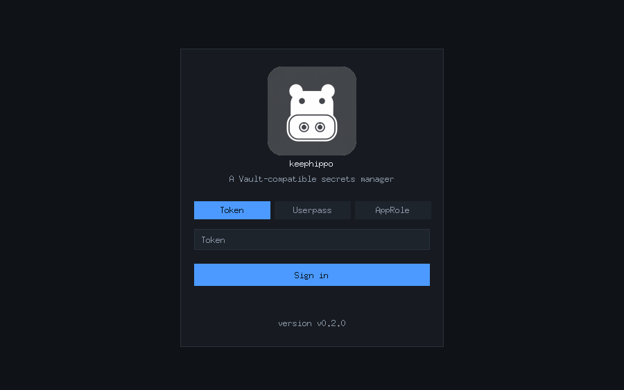
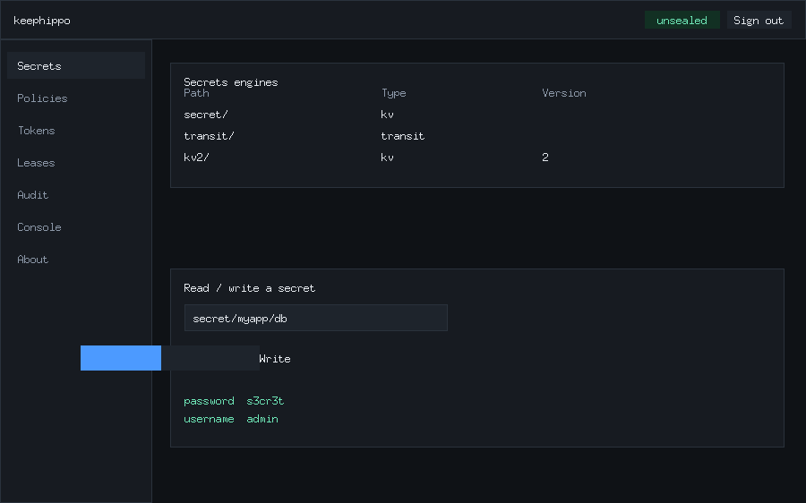
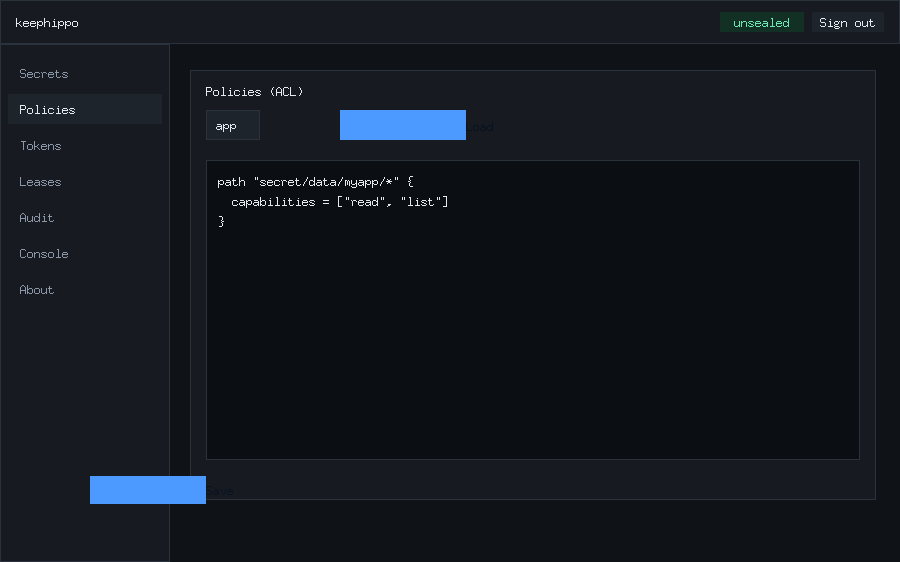
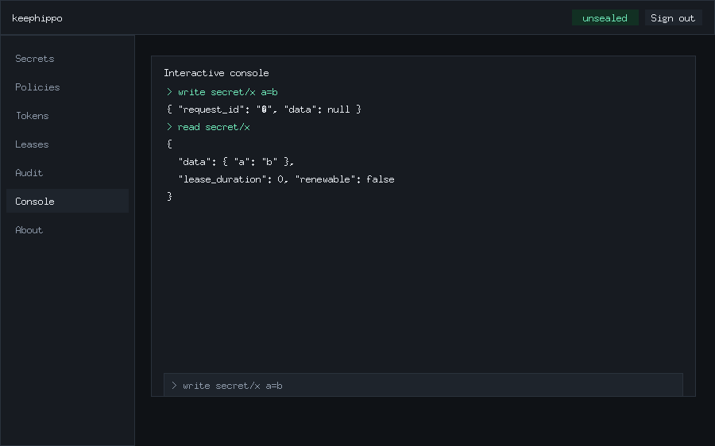
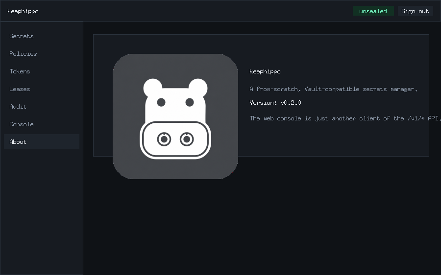

Web console
Enable the browser console with ui = true in your config (dev mode enables it
automatically), then open http://127.0.0.1:8200/ui. It is just another client
of the /v1/* API — it grants no extra privileges — and works entirely with the
token you sign in with. This walkthrough follows the same login → unseal → enable
mount → write/read → edit policy → run a console command path as the CLI.
1. Sign in. The login screen offers token, userpass, and approle. If the server is sealed it shows an unseal box first; submit key shares until it opens.

2. Browse and enable engines. The Secrets screen lists your mounts and lets you enable a new one (pick a type and, for KV, a version), then read and write secrets from a simple form.

3. View and edit policies. The Policies screen loads any policy into an
editor and saves your changes back — the browser equivalent of
keephippo policy read / policy write.

4. Run commands interactively. The Console screen is an in-browser REPL:
type write secret/x a=b then read secret/x and it renders the same JSON
envelope the CLI returns, executing against /v1/* with your token.

5. About. The About panel shows the app badge, name, and version (read
live from sys/seal-status). Token and lease management live under the Tokens
and Leases screens, and enabled audit devices under Audit.
